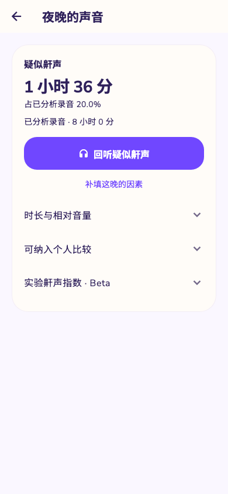
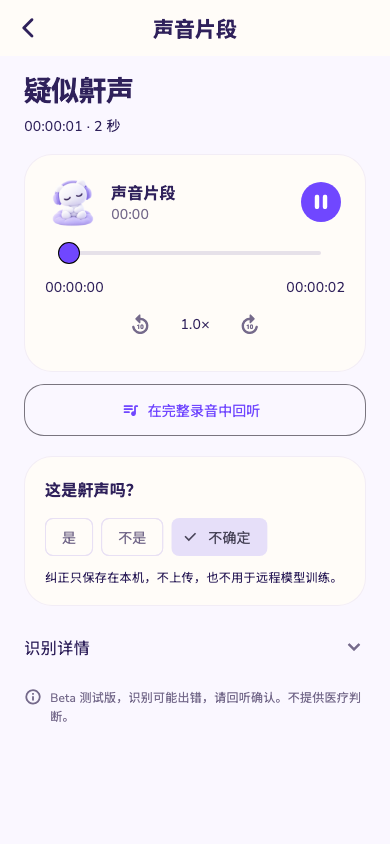
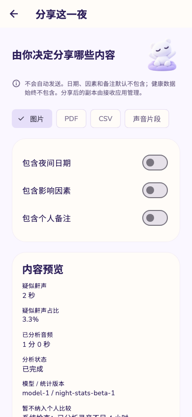
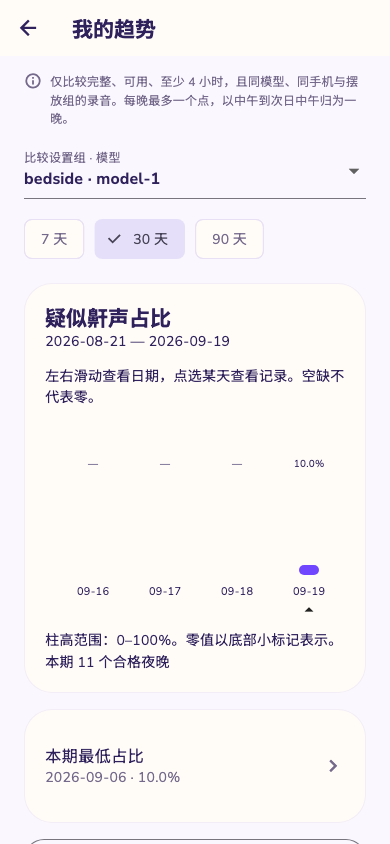

不只看结果，
也听听原声
从疑似片段跳回完整录音，听清前后发生了什么；定位播放和倍速回听都由你掌控。
熟悉的声音，
让数据更有温度。

每一个夜晚，
都有自己的声音。
不只看结果，也能听见细节。所有分析都在支持的 iPhone 上完成。
从疑似片段跳回完整录音，听清前后发生了什么；定位播放和倍速回听都由你掌控。
熟悉的声音，
让数据更有温度。
本机分析标记疑似鼾声、说话和咳嗽。再用自己的耳朵确认或纠正，保留判断权。

这些片段，
都需要你亲自听一听。
用可比的夜晚观察趋势，记录睡姿、鼻塞、枕头等因素。看见差异，但不把相关当作因果。
关注趋势，
而不是追逐完美。
每一晚都从你主动开始。手机端开始记录后，切换应用或锁屏仍会继续记录；醒来后回听、确认，再把那天的生活因素记下来。积累足够记录后，属于你的变化才慢慢浮现。


录音、分析结果和夜晚日记保存在你的设备上。SnoreSpot 不会自动上传音频，你可以随时导出、分享或删除。
你的声音，
只属于你。
首发计划提供 3 晚免费体验，之后一次买断，无订阅、无自动续费。
最终功能与价格以正式上架页面为准。开始记录之前，先了解 SnoreSpot 的能力与边界。
不会。只有你主动开始记录后，SnoreSpot 才会使用麦克风；手机端切换应用或锁屏后会继续记录，结束仍由你操作。整夜可靠性还在真机验证中，不把它说成已经验收的承诺。
不会自动上传。录音、分析和日记保存在本机。只有你主动使用系统分享时，内容才会交给你选择的接收应用。
不能。SnoreSpot 用于记录和个人观察，不是医疗器械，不测量睡眠时长，也不替代专业医疗意见。
不一定。设备端分析可能出错，因此每个片段都支持回听、确认和纠正；未检测到片段也不代表没有鼾声。